A difficulty 10 raid built around one boss, Soul Butcher. The fight is a positioning puzzle on a raft, and the pattern charts below are what make it learnable.
Source: the raid channel, plus the How to Soul Butcher thread in the Discord strategy forum. Pattern charts and the corner strategy by Rang3r, area skin by thanx JP. Video source: HammerHead9000's clear run.Open the Discord source channelOpen the full video
1Quest overview
Item
Detail
Where to find it
Episode 1 > Special > The Ravenous Predator [Raid]
Difficulty
★10
Boss
Soul Butcher
Signature drop
Parasitic Armor 'Predator' 1/36 (all IDs)
Parasitic Armor 'Predator' is what unlocks Dark Bridge's low HP mode, which switches the special to 1-1-4 hits with a different motion.
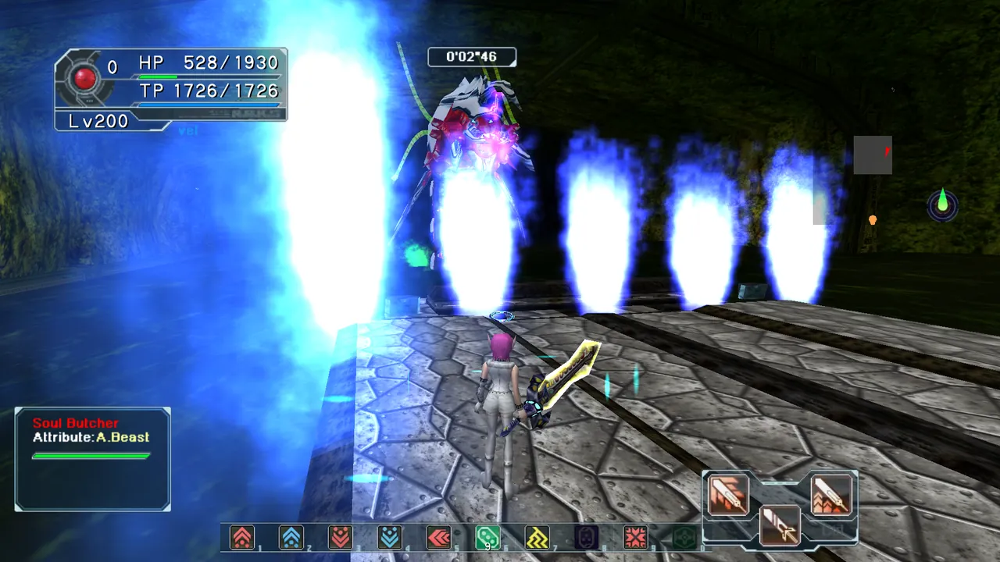
Soul Butcher.
2Assign the corners before you start
Most wipes come from two players running to the same corner. Decide who takes which corner in the lobby, not during the fight.
Give every player one corner of the raft up front. The community names them after the warps and the NPC: red, blue, green and ill gill.
If you cannot reach your own corner in time, swap with the player on the same side. Front left (ill gill) pairs with back left (blue), and front right (green) pairs with back right (red).
Three teleporters coloured red, blue and green plus the NPC ill gill show up as map markers, so you can orient yourself from the map.
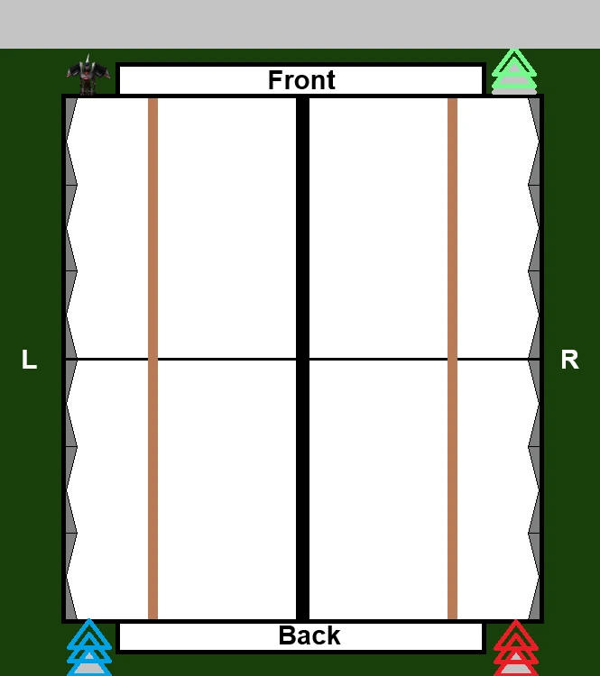
The raft layout used by the pattern charts. Explosion sizes are marked on the chart itself.
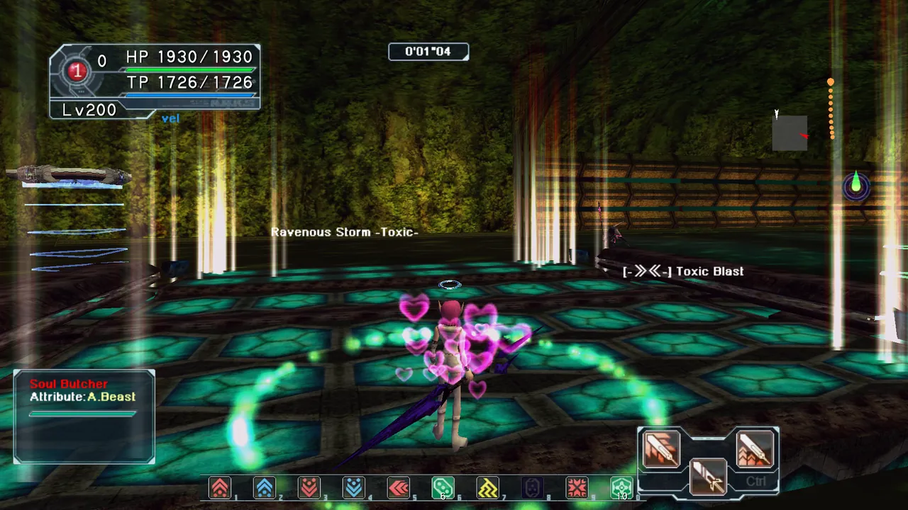
An optional area skin that paints the safe ground. Drop the file into the scene folder to use it.
3Ravenous Storm [Toxic]
Five steps, in order. Each chart shows where the damage lands and where you should be standing.
How to read the charts: dark red circles are damage zones, coloured stars are player positions, and arrows show the next move.
Core routeCentre → split into front/back pairs → assigned corners → remain spread through the finish.
Final checkRead the [Toxic] suffix before moving. The last personal areas must not overlap.
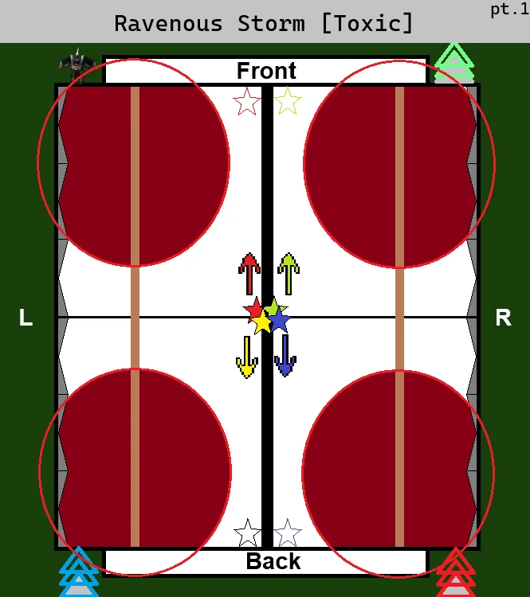
pt.1 · Split into front/back pairsStart in the centre, then split two players to the front and two to the back while the four corners explode.
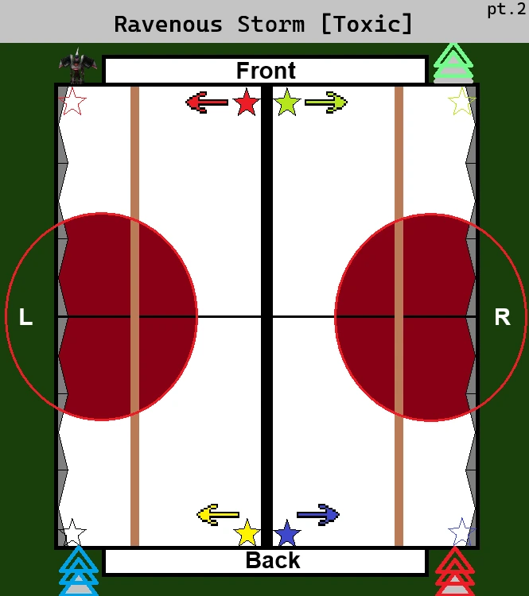
pt.2 · Spread to assigned cornersAvoid the left/right blasts and fan out from each pair to the four assigned corners.
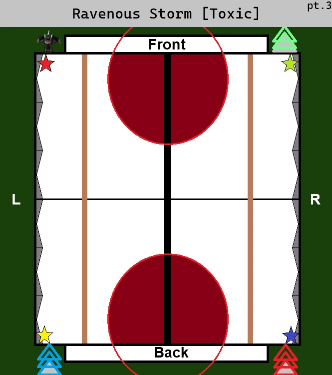
pt.3 · Hold the cornersThe front and back centres explode. Do not leave your corner.
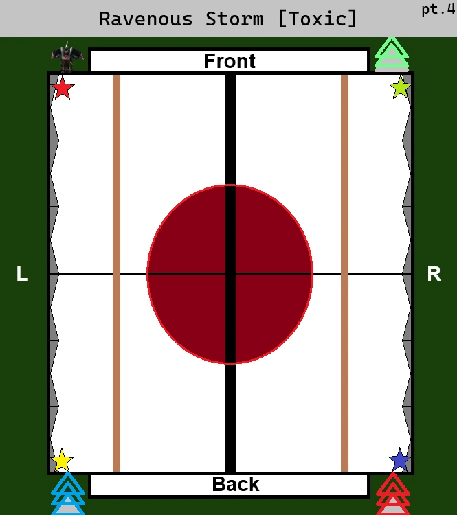
pt.4 · Keep holdingThe centre explodes next. Stay at the assigned corner until it resolves.
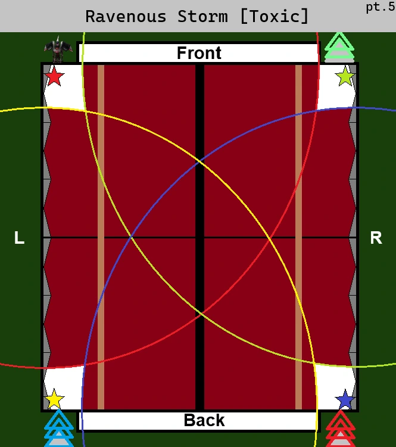
pt.5 · Personal-area spreadEach corner receives a large personal area. Finish the pattern spread out; never converge.
Toxic ends with four players spread at their assigned corners. Tap a chart to enlarge it.
4Ravenous Storm [Blazing]
Same idea, different pattern. Watch for the finish.
Core routeAssigned corners → hold → split into front/back pairs → exact centre → remain stacked.
Final checkRead the [Blazing] suffix before moving. After pt.5, stay together for the stack-damage explosion.
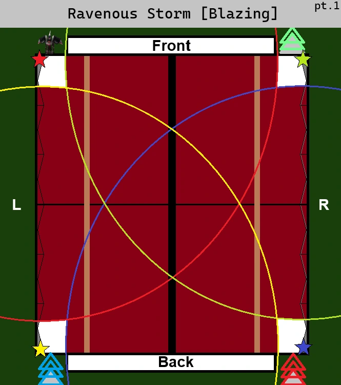
pt.1 · Assigned-corner spreadStart at the four assigned corners so the large personal areas do not overlap.
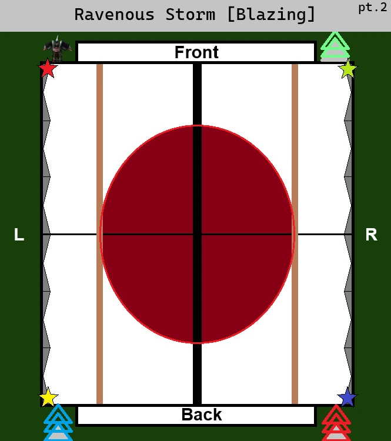
pt.2 · Hold the cornersThe centre explodes. Stay out and keep your corner.
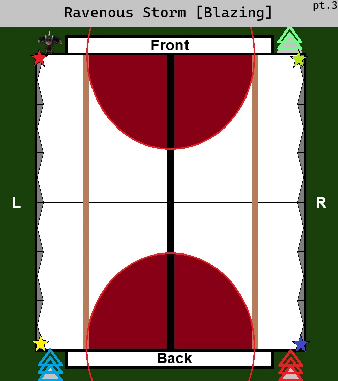
pt.3 · Keep holdingThe front and back centres explode next. Remain in the corners.
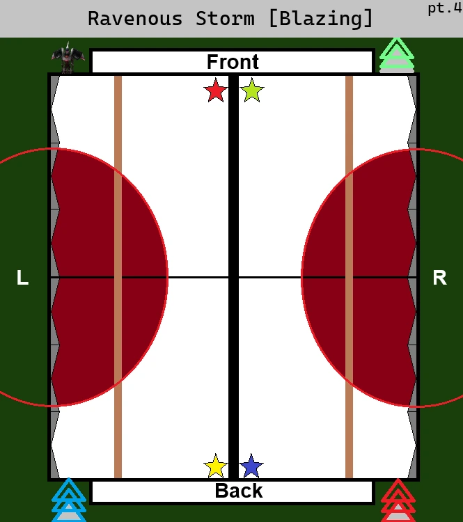
pt.4 · Gather into front/back pairsThe left and right sides explode. Two players meet at the front centre and two at the back centre.
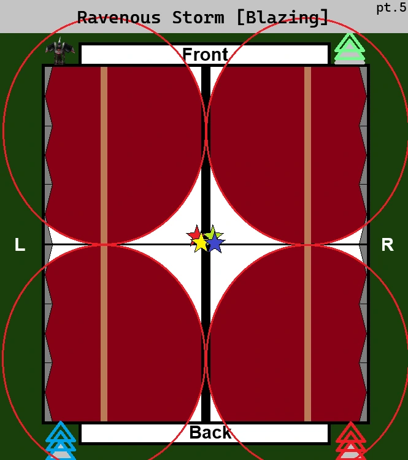
pt.5 · Stack in the exact centreThe four corners explode. All four players converge in the centre and stay together.
After pt.5 the attack ends with a stack-damage explosion, so group up instead of spreading out.
5Video walkthrough and practical dodges
The diagrams show where safe zones are. These clips show when to move: watch the call, let the hit finish, then reset to your assigned position.
The video is one successful run, so use the on-screen skill name and your party caller as the final timing cue.
Ancient Rabarta appears while the party is holding near the edge.
Response
Stop and wait for the ice/line effect to finish, then follow the next call into the middle.
Common mistake
Moving as soon as you reach the edge puts you back into the unresolved attack.
Practical rules that prevent most wipes
One caller only
Use short calls: centre, corner, side, front, back, colour, stack, spread. Everyone moves on the same call.
Reset after every mechanic
After an explosion, add wave or laser, return to your assigned home position unless the next call says otherwise.
Do not revive into an active pattern
Wait for a multi-hit or line attack to finish before using Moon Atomizer or accepting the revive.
Keep the map visible
Use the red, blue, green and ill gill markers to identify the correct edge without turning the camera.
Restock before the pull
Bring a full Moon Atomizer supply and finish MAG/equipment setup before entering. The run loses time and resources correcting this after the pull.
6Quick call sheet
Call / signal
What to do
Ravenous Storm [Toxic]
Centre → front/back pairs → corners. Finish spread at the four assigned corners.
Ravenous Storm [Blazing]
Corners → front/back pairs → exact centre. Remain stacked after pt.5.
Soul Explosion X → Twin Blast
Hold for Soul Explosion X, then spread to assigned positions for Twin Blast.
Fire Blast
Spread to assigned edges so the personal areas do not overlap.
Centre
Group briefly for damage or the shared safe zone; be ready to split on the next call.
Corner
Take your assigned corner. If blocked, swap only with the partner on the same side.
Side / front / back
Move to the called edge, wait for the full hit, then reset.
Colour
Follow the caller to the named map marker; do not invent a second route.
Ancient Grants
Marked player isolates; the other three spread away.
Ancient Rabarta
Hold at the edge until the ice/line effect finishes, then move on the next call.
Jump
Stay spread for the landing blast. Enter the middle only on the next call.
Counted call
Wait for the called hit count to finish, then move.
Spawned targets
Destroy them during the front/back sequence, then reset to corners.
Stack symbol
Group tightly so the damage is shared.
Spread symbol
Create space so personal areas do not overlap.
7Reading the skill symbols
A boss announces its skill name before it fires. The symbols in the name tell you what shape the attack takes, so learning them is faster than memorising every skill.
Symbol
Meaning
[O]
Circular hitbox, explosion.
[●]
Damage falls off with distance from the centre of the explosion.
[!]
Unavoidable.
[<<-->>]
Circular area of effect. Spread out from each other.
[->><<-]
Damage stacks. Group up.
[|||]
Straight line attack, vertical.
[=]
Straight line attack, horizontal.
[*]
Attacks from several directions.
Resist Down [X]
Increases the damage you take from the [X] attribute.